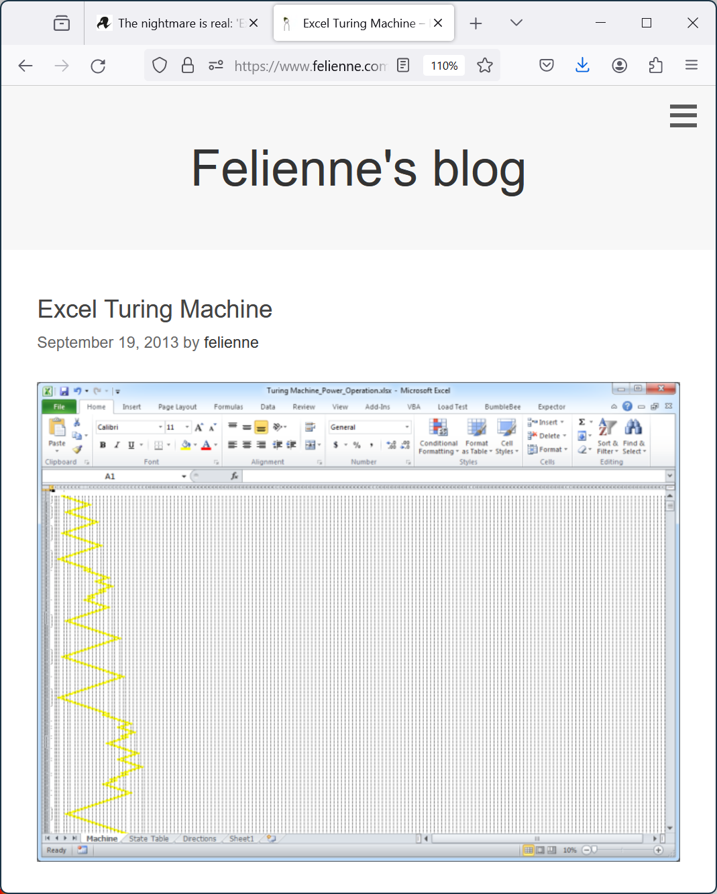
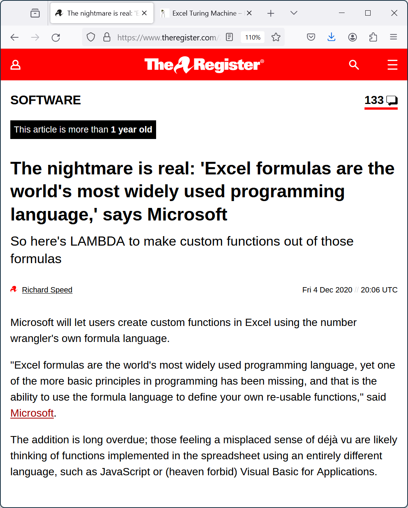
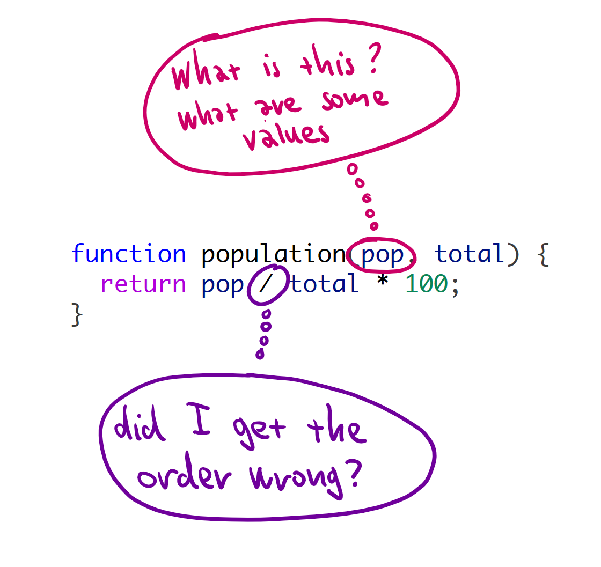
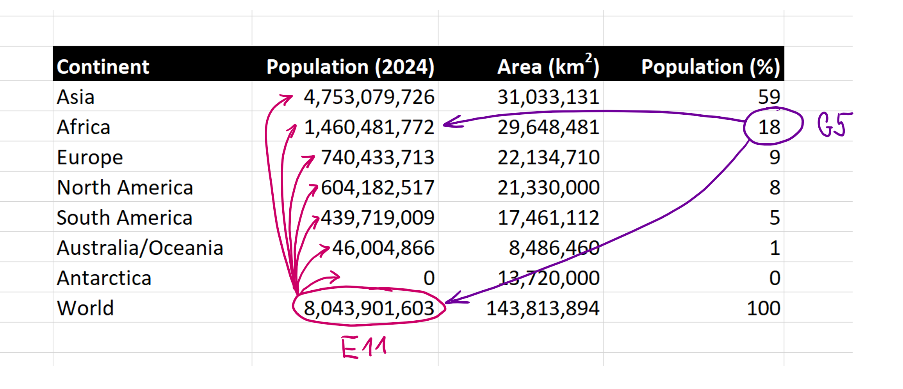
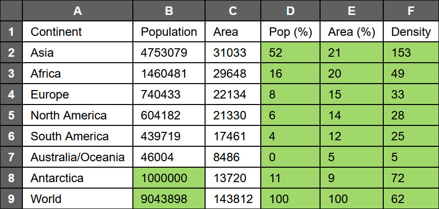

NPRG077
TinyExcel: Tiny incremental
spreadsheet system
Tomáš Petříček, 309 (3rd floor)
petricek@d3s.mff.cuni.cz
https://tomasp.net | @tomaspetricek
https://d3s.mff.cuni.cz/teaching/nprg077


Is Excel real programming?
It is Turing-complete!
Encoded using "drag-down"

It is widely-used!
Simple, but can do a lot...

TinyExcel
What makes spreadsheets interesting?
- Most accessible programming tools!
- Program in a two-dimensional space
- Edit and view in the same environment
- Automatic and live sheet recomputation

Technical Dimensions of Programming Systems
(Jakubovic et al., 2023)
What matters about stateful interactive systems?
Demo
Excel data exploration basics

Abstraction is hard
Drag-down for formulas makes abstraction easy
You only ever work with concrete values
Always see sample inputs & verify sample outputs
TinyExcel
Scope of the tiny version
- Two-dimensional space with references
- "Drag-down" to apply formula to a column
- Relative and absolute cell references
- Incremental computational engine
TinyExcel
Technical dimensions
The good and the bad

High usability
- Live exploratory programming
- Work with concrete values
- Learning from examples
High-profile errors
- "Growth in the time of debt" errors
-
SEPT2, MARCH1 gene names
(Septin, Membrane-Associated Ring Finger)
Confusing terminology
-
Exploratory programming
Write, run, rethink with easy editing -
Live programming
See results of your program immediately -
Live coding
Run immediately, typically audio performance -
Interactive programming
Modify stateful programming system

Spreadsheets are...
Exploratory - easy to fiddle with data
Live - you see results (almost) immediately

Concreteness
Unimate industrial robot (1961)
Program by moving
the robotic hand
Macro recording
but done right
Concrete programming

Programming by demonstration
- Think macro recording
- How to generalize & re-apply
- "Drag down" in spreadsheets
Programming by example
- Generalize from input/output list
- Search for fitting program
- Also FlashFill in Excel
Demo
FlashFill in Excel
How people learn Excel
From existing spreadsheets
- View source of formulas
- Learn how functions work
- Logic needs to be visible!
Going to the expert
- Every office has Excel "guru"
- Needed for harder aspects
- Needed for use that does not have a "trace"

The grid power!
Humans are good at working with space
Programs are not typically spatial...
Grid is limiting, but powerful concept
TinyExcel
Learning from spreadsheets?
- More programming for non-programmers?
- Immediate live feedback is great!
- Abstractions from working with concrete values
- Programs should exist in understandable space

Could "normal" programming be more like this?
Demos by Bret Victor
Learnable Programming: Designing a programming system for understanding programs (online)
TinyExcel
Implementation techniques

Inter-cell dependencies
In what order to evaluate sheet?
Avoid evaluating
a cell repeatedly!
What to re-evaluate
when cells change?

Dependency graphs
Dependencies via cell
and range references
Cyclic dependencies
Excel does a fixed maximal number of iterations
Explicit or implicit in code
Graph data structure vs. event listeners
Reactive programming

Different implementations
- Functional Reactive Programming
- ReactiveX (rxjs, RxJava, Rx.Net)
- Elm software architecture
Implementation techniques
- Push-based - Changes propagated from source
- Pull-based - Update required by the consumer
- Builder-based - Computation to be instantiated
TinyExcel
Implementation techniques
- Naive non-cached recursive starting point
- Cell is as graph node with "Updated" event
- Depending nodes listen, recompute & notify
- Tricky error and update handling...
The F# language
What we need for Excel
What we need to write Excel

Event handling
- F# events are objects (values)
- Can trigger & register handlers
More tips & tricks
- Collection processing
- Fancy patterns and active patterns
Finally a user interface?
- Would be nice, but setup costs high...
- Write sheet as HTML document & open
Generating lists
List comprehensions with the yield keyword
let worldInfo =
[ yield addr "A1", Const(String "Continent")
yield addr "B1", Const(String "Population (thousands)")
for i, (cont, pop) in Seq.indexed continents do
yield addr ("A"+string(i+2)), Const(String cont)
yield addr ("B"+string(i+2)), Const(Number pop) ]
yieldadds another item to the listforand other constructs to write generatorsSeq.indexedtrick to get item index
Demo
Extending the List module
// Decares event value
let evt = Event<int>()
// Trigger event
evt.Trigger(1)
evt.Trigger(2)
evt.Trigger(3)
// Object for listening
evt.Publish
// Listen and print
evt.Publish.Add(fun n ->
printfn "Got: %d" n)
F# Events
Regular F# objects
Not special constructs
Corresond to IObservable in C#
Add and remove handlers using AddHandler and RemoveHandler
Demo
Working with F# events
Writing and opening HTML files
If you know C#, you can use other options too!
let demo () =
let f = Path.GetTempFileName() + ".html"
use wr = new StreamWriter(File.OpenWrite(f))
wr.Write("""<html><body><h1>Hello world!</h1></body></html>""")
wr.Close()
Process.Start(f)
GetTempFileNamegives you a file in TEMP folderuseto make sure stream gets closed on errorProcess.Startcan (sometimes) open files too
TinyExcel
Implementation structure
// In column, row format
// e.g. A1 becomes (1, 1)
type Address = int * int
// Note error is a value!
type Value =
| Number of int
| String of string
| Error of string
// Operators are functions
type Expr =
| Const of Value
| Reference of Address
| Function of string * Expr list
// Using immutable F# map
type Sheet = Map<Address, Expr>
Simple start
Standard ML-like expression language
References (instead
of variables) are evaluated recursively
Sheet maps (filled) addresses to expressions
// Expression and value are
// mutable. Updated triggered
// when they change.
type CellNode =
{ mutable Value : Value
mutable Expr : Expr
Updated : Event<unit> }
// Immutable map
// of mutable cells
type LiveSheet =
Map<Address, CellNode>
Version with the dependency graph
Value evaluated
on creation which prevents circular refs
Expression stored
"drag down" expansion
Updated event
to notify of changes
Advanced extensions
Ranges and array values
type Value = // (...)
| Array of Value list
type Expr = // (...)
| Range of Address * Address
Absolute addresses
type Index = Fixed of int | Normal of int
type RawAddress = int * int
type Address = Index * Index
Lab overview
TinyExcel step-by-step
TinyExcel - Basic tasks
-
Simple expression evaluator
With grid references by cell address -
"Drag down" formula expanding
Relocating relative references in formula -
Reactive event-based structure
Refactoring code to use graph nodes -
Reactive event-based computation
Adding update event handling -
Rendering sheets as HTML pages
First step towards a user interface
TinyExcel - Bonus and super tasks
-
Absolute and relative addresses
Alongside with improved "drag down" -
Adding range selection and array values
Required for the SUM function -
Adding change visualization
Tracking and showing what has changed -
Full support for live editing
Updating dependencies in the dependency graph
Closing
Tiny incremental spreadsheet system
Where can you use this...
Financial systems
- Live financial models
-
Incremental computation
with dependency graph
Interesting programming systems
- Live programming systems
- Future more usable programming tools!
Conclusions
A tiny incremental spreadsheet system
- Computation as dependency graph
- Working with two-dimensional grid
- Good old (ML-like) expressions
Tomáš Petříček, 309 (3rd floor)
petricek@d3s.mff.cuni.cz
https://tomasp.net | @tomaspetricek
https://d3s.mff.cuni.cz/teaching/nprg077
https://direct.mit.edu/books/book/3071/Spreadsheet-Implementation-TechnologyBasics-and (hard to get...)
https://www.theregister.com/2020/12/04/microsoft_excel_lambda/
https://www.felienne.com/archives/2974
https://arxiv.org/ftp/arxiv/papers/1807/1807.08578.pdf
https://theconversation.com/the-reinhart-rogoff-error-or-how-not-to-excel-at-economics-13646
https://genomebiology.biomedcentral.com/articles/10.1186/s13059-016-1044-7
https://advait.org/publications-web/sarkar-2018-spreadsheet-learning